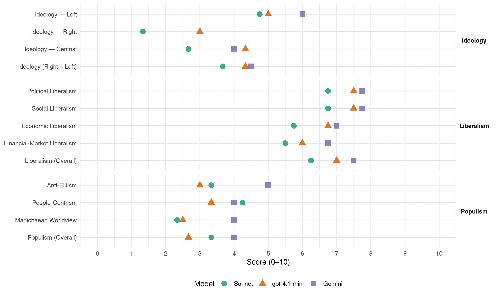

PLD (Dominican Republic, 1996)
manifesto_id 168331_199605
Get full text: This site shows derived annotations and short verbatim quotes only. The full manifesto text is © Manifesto Project / WZB — obtain it via manifesto-project.wzb.eu using the manifesto_id above.
Headline scores
| Dimension | Sonnet | gpt-4.1-mini | Gemini |
|---|---|---|---|
| Populism (Overall) | 3.3 | 2.7 | 4.0 |
| Anti-Elitism | 3.3 | 3.0 | 5.0 |
| People-Centrism | 4.2 | 3.3 | 4.0 |
| Manichaean Worldview | 2.3 | 2.5 | 4.0 |
| Ideology (Right − Left) | 3.7 | 4.3 | 4.5 |
| Liberalism (Overall) | 6.2 | 7.0 | 7.5 |
| Political Liberalism | 6.8 | 7.5 | 7.8 |
| Social Liberalism | 6.8 | 7.5 | 7.8 |
| Economic Liberalism | 5.8 | 6.8 | 7.0 |
| Financial-Market Liberalism | 5.5 | 6.0 | 6.8 |
Evidence per dimension
Economic Liberalism
Gemini · score 7.0 · verified · chunk 1
“el funcionamiento del mercado implica competencia, mecanismo a través del cual se asignan y regulan libremente los recursos”
El funcionamiento del mercado implica competencia, mecanismo a través del cual se asignan y regulan libremente los recursos financieros, técnicos y humanos para las empresas del sector privado.
Gemini · score 8.0 · verified · chunk 2
“abierta a la libre competencia”
Asegurar que la etapa de generación de electricidad esté abierta a la libre competencia.
Gemini · score 8.0 · verified · chunk 3
“mecanismo de la libre competencia”
Implantar la rentabilidad económica como criterio para el funcionamiento de las empresas públicas mediante el mecanismo de la libre competencia.
Gemini · score 5.0 · verified · chunk 4
“exonerar de impuestos todos los instrumentos de trabajo”
quedarse en su país de manera definitiva. Igualmente, exonerar de impuestos todos los instrumentos de trabajo que sean traídos al
gpt-4.1-mini · score 7.0 · verified · chunk 1
“la competencia en el mercado de bienes y servicios, financiero y laboral”
El cambio de eje de la actividad económica coincide con la profundización del papel del mercado en la asignación de recursos, estimulando a su vez la competencia en el mercado de bienes y servicios, financiero y laboral. Estas modificaciones provocan concomitantemente una readecuación de la estructura económica, social e institucional en todas las actividades privadas y públicas.
gpt-4.1-mini · score 7.0 · verified · chunk 2
“política macroeconómica orientada mas a la estabilidad monetaria”
Una política macroeconómica orientada mas a la estabilidad monetaria con el objetivo de pagar la deuda externa que al estímulo de la inversión productiva.
gpt-4.1-mini · score 6.0 · verified · chunk 3
“libre competencia, la obligatoriedad de la interconexión, el servicio universal”
…Promover una nueva legislación en el área de las telecomunicaciones cuyos elementos básicos sean la libre competencia, la obligatoriedad de la interconexión, el servicio universal, el control de las frecuencias del espectro radioeléctrico por parte del Estado y la libertad de tarifas…
gpt-4.1-mini · score 7.0 · verified · chunk 4
“libre organización de los trabajadores y la estabilidad en sus empleos”
Respetar y hacer cumplir el régimen de la libertad y fuero sindical que permita la libre organización de los trabajadores y la estabilidad en sus empleos como marco indispensable para el desarrollo de un movimiento sindical responsable y representativo de los mejores intereses del sector.
Sonnet · score 6.0 · verified · chunk 1
“competencia en el mercado de bienes y servicios”
estimulando a su vez la competencia en el mercado de bienes y servicios, financiero y laboral
Sonnet · score 6.0 · verified · chunk 2
“libre competencia”
Asegurar que la etapa de generación de electricidad esté abierta a la libre competencia
Sonnet · score 6.0 · verified · chunk 3
“libre competencia”
Implantar la rentabilidad económica como criterio para el funcionamiento de las empresas públicas mediante el mecanismo de la libre competencia
Sonnet · score 5.0 · verified · chunk 4
“competitividad del mercado interno”
El proceso de transferencia tecnológica se ha visto limitado por la restringida competitividad del mercado interno
Financial-Market Liberalism
Gemini · score 7.0 · verified · chunk 1
“Promover y ordenar el mercado de capitales, que regule la emisión y comercialización de títulos de valores”
Promover y ordenar el mercado de capitales, que regule la emisión y comercialización de títulos de valores. Implementar una política de inversión productiva
Gemini · score 7.0 · verified · chunk 2
“promover y ordenar el mercado de capitales”
Propiciar las operaciones de mercado abierto para regular la liquidez del sistema. Promover y ordenar el mercado de capitales, que regule la emisión y comercialización de títulos
Gemini · score 7.0 · verified · chunk 3
“bajar el costo del dinero, estabilizar las tasas de interés”
Crear condiciones para bajar el costo del dinero, estabilizar las tasas de interés y de los precios de los insumos utilizados en el sector de la construcción.
Gemini · score 6.0 · verified · chunk 4
“reglas estrictas de preservación de las reservas”
Manejar los fondos de pensiones con reglas estrictas de preservación de las reservas, idoneidad y transparencia
gpt-4.1-mini · score 6.0 · verified · chunk 1
“la reforma institucional del sector financiero que implica, por un lado, el fortalecimiento de la capacidad técnica de la Superintendencia de Bancos”
Llevar a cabo la reforma institucional del sector financiero que implica, por un lado, el fortalecimiento de la capacidad técnica de la Superintendencia de Bancos, para la eficiencia de su función de supervisión al sistema bancario; y, por otro, la autonomía del Banco Central.
gpt-4.1-mini · score 7.0 · verified · chunk 2
“fortalecimiento de la capacidad técnica de la Superintendencia de Bancos”
Llevar a cabo la reforma institucional del sector financiero que implica, por un lado, el fortalecimiento de la capacidad técnica de la Superintendencia de Bancos, para la eficiencia de su función de supervisión al sistema bancario; y, por otro, la autonomía del Banco Central.
gpt-4.1-mini · score 5.0 · verified · chunk 3
“control de las frecuencias del espectro radioeléctrico por parte del Estado”
…Promover una nueva legislación en el área de las telecomunicaciones cuyos elementos básicos sean la libre competencia, la obligatoriedad de la interconexión, el servicio universal, el control de las frecuencias del espectro radioeléctrico por parte del Estado y la libertad de tarifas…
Sonnet · score 6.0 · verified · chunk 1
“autonomía del Banco Central”
la eficiencia de su función de supervisión al sistema bancario; y, por otro, la autonomía del Banco Central
Sonnet · score 6.0 · verified · chunk 2
“Promover y ordenar el mercado de capitales”
Propiciar las operaciones de mercado abierto para regular la liquidez del sistema. Promover y ordenar el mercado de capitales, que regule la emisión y comercialización de títulos de valores
Sonnet · score 5.0 · verified · chunk 3
“bajar el costo del dinero, estabilizar las tasas de interés”
Crear condiciones para bajar el costo del dinero, estabilizar las tasas de interés y de los precios de los insumos utilizados en el sector
Sonnet · score 5.0 · verified · chunk 4
“tasas de financiamiento accesibles”
Apoyar las instituciones financieras para el establecimiento de tasas de financiamiento accesibles para la construcción de viviendas de interés social
Political Liberalism
Gemini · score 8.0 · verified · chunk 1
“la voluntad de la mayoría con apego y respeto al derecho de las minorías”
Por ello entendemos que la democracia, la voluntad de la mayoría con apego y respeto al derecho de las minorías, es la única garantía para hacer progresar la sociedad
Gemini · score 8.0 · verified · chunk 2
“desarrollo sustentable e instituciones democráticas”
PLD aspira como el gran proyecto nacional, se orientará a garantizar el crecimiento económico con desarrollo sustentable e instituciones democráticas que impacten positivamente sobre el mercado laboral
Gemini · score 7.0 · verified · chunk 3
“valores democráticos y la revalorización”
orientado a fomentar la paternidad y la maternidad responsables, los valores democráticos y la revalorización de las relaciones de poder a nivel doméstico
Gemini · score 8.0 · verified · chunk 4
“derecho constitucional de votar en las elecciones”
lograr que todos los dominicanos residentes en el exterior puedan ejercer el derecho constitucional de votar en las elecciones nacionales. El objetivo
gpt-4.1-mini · score 8.0 · verified · chunk 1
“la democracia es la participación consciente y creciente del pueblo”
Para el Partido de la Liberación Dominicana la democracia es la participación consciente y creciente del pueblo en la toma de las grandes decisiones y constituye el eje de nuestras acciones. Asumimos una posición intransigente frente a la falta de un ejercicio auténticamente democrático y afirmamos que en un gobierno peledeísta pondremos en práctica procedimientos democráticos en la toma de decisiones y en la solución de conflictos en el seno de la sociedad.
gpt-4.1-mini · score 7.0 · verified · chunk 2
“instituciones democráticas que impacten positivamente”
La estrategia de desarrollo para la sociedad dominicana a mediano y largo plazo, a la que el PLD aspira como el gran proyecto nacional, se orientará a garantizar el crecimiento económico con desarrollo sustentable e instituciones democráticas que impacten positivamente sobre el mercado laboral, el medio ambiente y la población que vive en condiciones de pobreza.
gpt-4.1-mini · score 7.0 · verified · chunk 3
“democracia real que garantice un estado de justicia social”
…que respetarlos y hacerlos respetar en su gobierno constituye una condición indispensable para el logro del desarrollo sostenible y de una democracia real que garantice un estado de justicia social y el bienestar de la familia dominicana…
gpt-4.1-mini · score 8.0 · verified · chunk 4
“la democracia, la solidaridad, la eficiencia, la igualdad, la universalidad, la calidad y la descentralización”
Impulsar un proceso de reforma del sector salud, teniendo como fundamento los principios de la democracia, la solidaridad, la eficiencia, la igualdad, la universalidad, la calidad y la descentralización.
Sonnet · score 8.0 · verified · chunk 1
“independencia efectiva del Poder Judicial”
Lograr la independencia efectiva del Poder Judicial, para lo cual se propiciará la autonomía económica y presupuestaria
Sonnet · score 6.0 · verified · chunk 2
“instituciones democráticas que impacten positivamente”
garantizar el crecimiento económico con desarrollo sustentable e instituciones democráticas que impacten positivamente sobre el mercado laboral
Sonnet · score 6.0 · verified · chunk 3
“mayor transparencia posible”
asignación se haga con la mayor transparencia posible. Revisar la ley de concursos para hacerla más justa y democrática
Sonnet · score 7.0 · verified · chunk 4
“principios de la democracia, la solidaridad”
Impulsar un proceso de reforma del sector salud, teniendo como fundamento los principios de la democracia, la solidaridad, la eficiencia, la igualdad
Liberalism (Overall)
Gemini · score 7.0 · verified · chunk 1
“el funcionamiento del mercado implica competencia, mecanismo a través del cual se asignan y regulan libremente los recursos”
El funcionamiento del mercado implica competencia, mecanismo a través del cual se asignan y regulan libremente los recursos financieros, técnicos y humanos para las empresas del sector privado.
Gemini · score 8.0 · verified · chunk 2
“abierta a la libre competencia”
Asegurar que la etapa de generación de electricidad esté abierta a la libre competencia.
Gemini · score 8.0 · verified · chunk 3
“mecanismo de la libre competencia”
Implantar la rentabilidad económica como criterio para el funcionamiento de las empresas públicas mediante el mecanismo de la libre competencia.
Gemini · score 7.0 · verified · chunk 4
“derecho constitucional de votar en las elecciones”
lograr que todos los dominicanos residentes en el exterior puedan ejercer el derecho constitucional de votar en las elecciones nacionales. El objetivo
gpt-4.1-mini · score 7.0 · verified · chunk 1
“la competencia en el mercado de bienes y servicios, financiero y laboral”
El cambio de eje de la actividad económica coincide con la profundización del papel del mercado en la asignación de recursos, estimulando a su vez la competencia en el mercado de bienes y servicios, financiero y laboral. Estas modificaciones provocan concomitantemente una readecuación de la estructura económica, social e institucional en todas las actividades privadas y públicas.
gpt-4.1-mini · score 7.0 · verified · chunk 2
“instituciones democráticas que impacten positivamente”
La estrategia de desarrollo para la sociedad dominicana a mediano y largo plazo, a la que el PLD aspira como el gran proyecto nacional, se orientará a garantizar el crecimiento económico con desarrollo sustentable e instituciones democráticas que impacten positivamente sobre el mercado laboral, el medio ambiente y la población que vive en condiciones de pobreza.
gpt-4.1-mini · score 6.0 · verified · chunk 3
“libre competencia, la obligatoriedad de la interconexión, el servicio universal”
…Promover una nueva legislación en el área de las telecomunicaciones cuyos elementos básicos sean la libre competencia, la obligatoriedad de la interconexión, el servicio universal, el control de las frecuencias del espectro radioeléctrico por parte del Estado y la libertad de tarifas…
gpt-4.1-mini · score 8.0 · verified · chunk 4
“la democracia, la solidaridad, la eficiencia, la igualdad, la universalidad, la calidad y la descentralización”
Impulsar un proceso de reforma del sector salud, teniendo como fundamento los principios de la democracia, la solidaridad, la eficiencia, la igualdad, la universalidad, la calidad y la descentralización.
Sonnet · score 7.0 · verified · chunk 1
“fortalecimiento del sistema democrático”
la administración de Justicia contribuya al fortalecimiento del sistema democrático y a la seguridad ciudadana
Sonnet · score 6.0 · verified · chunk 2
“libre competencia”
Asegurar que la etapa de generación de electricidad esté abierta a la libre competencia
Sonnet · score 6.0 · verified · chunk 3
“igualdad entre hombres y mujeres es una cuestión de derechos humanos”
reconoce que la igualdad entre hombres y mujeres es una cuestión de derechos humanos y que respetarlos y hacerlos respetar
Sonnet · score 6.0 · verified · chunk 4
“principios de la democracia, la solidaridad”
Impulsar un proceso de reforma del sector salud, teniendo como fundamento los principios de la democracia, la solidaridad, la eficiencia, la igualdad
Anti-Elitism
Gemini · score 6.0 · verified · chunk 1
“incumplimiento de las promesas electorales a que los malos políticos han acostumbrado a nuestro pueblo”
Las razones de esa actitud son comprensibles y tienen mucho que ver, por un lado, con el sistemático incumplimiento de las promesas electorales a que los malos políticos han acostumbrado a nuestro pueblo y, por otro, con el divorcio
Gemini · score 4.0 · verified · chunk 3
“demagogia politiquera y el manejo irresponsable”
se convirtieron en una carga onerosa para el Estado y en fuente de corrupción, clientelismo e ineficiencia. La situación de las empresas públicas ha sido un expediente usado recurrentemente para la demagogia politiquera y el manejo irresponsable de la gestión estatal.
gpt-4.1-mini · score 3.0 · verified · chunk 1
“la corrupción, entendida como una práctica social tolerada e institucionalizada”
Los factores vinculados con el deterioro del sistema democrático son: la corrupción, entendida como una práctica social tolerada e institucionalizada; la desorganización social, que se refleja en el aumento de la criminalidad y la conducta delictiva, el deterioro de los servicios públicos y el aprovechamiento libre de los servicios básicos; la pérdida de confianza en la justicia y las instituciones y, por ende, el desaliento y la apatía social y política.
gpt-4.1-mini · score 4.0 · verified · chunk 2
“la corrupción administrativa”
El desequilibrio macroeconómico, el desorden institucional, la falta de reglas claras. la burocracia estatal, la corrupción administrativa, determinaron un ambiente poco confiable para la inversión extranjera, por lo que es necesario entonces definir una política clara y precisa que estimule este tipo de inversión, por lo que propugnamos por:
gpt-4.1-mini · score 2.0 · verified · chunk 3
“exagerado clientelismo político”
…manejos financieros inadecuados y falta de planificación en el proceso productivo, y exagerado clientelismo político. -Obsolescencia de los Parques Industriales…
Sonnet · score 5.0 · verified · chunk 1
“una élite política o intelectual”
Este movimiento no puede ser únicamente académico o de una élite política o intelectual. Es necesario discutir horizontalmente
Sonnet · score 2.0 · mixed · chunk 2
“corrupción administrativa, determinaron un ambiente”
el desorden institucional, la falta de reglas claras. la burocracia estatal, la corrupción administrativa, determinaron un ambiente poco confiable para la inversión extranjera
Sonnet · score 3.0 · verified · chunk 3
“fuente de corrupción, clientelismo e ineficiencia”
se convirtieron en una carga onerosa para el Estado y en fuente de corrupción, clientelismo e ineficiencia
Sonnet · score 2.0 · verified · chunk 4
“grandes diferencias entre ricos y pobres”
En República Dominicana se evidencia grandes diferencias entre ricos y pobres, y una parte importante de la población está catalogada como pobre
Ideology — Centrist
Gemini · score 4.0 · verified · chunk 3
“demagogia politiquera y el manejo irresponsable”
se convirtieron en una carga onerosa para el Estado y en fuente de corrupción, clientelismo e ineficiencia. La situación de las empresas públicas ha sido un expediente usado recurrentemente para la demagogia politiquera y el manejo irresponsable de la gestión estatal.
gpt-4.1-mini · score 5.0 · verified · chunk 1
“la participación consciente y creciente del pueblo en la toma de las grandes decisiones”
Para el Partido de la Liberación Dominicana la democracia es la participación consciente y creciente del pueblo en la toma de las grandes decisiones y constituye el eje de nuestras acciones. Asumimos una posición intransigente frente a la falta de un ejercicio auténticamente democrático y afirmamos que en un gobierno peledeísta pondremos en práctica procedimientos democráticos en la toma de decisiones y en la solución de conflictos en el seno de la sociedad.
gpt-4.1-mini · score 5.0 · verified · chunk 2
“la participación activa de los sectores sociales en la definición y ejecución”
Transformar las instituciones agropecuarias para motivar y hacer posible una mayor participación de los sectores sociales en la definición y ejecución de las políticas agropecuarias. Retirar la acción del Estado de aquellos ámbitos económicos donde los agentes privados y sociales han mostrado que pueden participar con mayor eficiencia,
gpt-4.1-mini · score 3.0 · verified · chunk 3
“trabajadores y empleados algunas áreas del CEA”
…Pasar a manos privadas, fundamentalmente trabajadores y empleados algunas áreas del CEA, tales como corte, tiro, transporte y comercialización de la caña…
Sonnet · score 4.0 · verified · chunk 1
“el gran Proyecto Nacional de la República Dominicana”
el programa del PLD pasa a constituirse en el gran Proyecto Nacional de la República Dominicana
Sonnet · score 2.0 · verified · chunk 3
“Abolir en todos los casos el clientelismo político”
Abolir en todos los casos el clientelismo político como criterio para el funcionamiento y la gestión administrativa de las empresas públicas
Sonnet · score 2.0 · verified · chunk 4
“todos los sectores de la sociedad”
Ejecutar una política cultural participativa que involucre a todos los sectores de la sociedad: Iglesias, Clubes, Juntas de Vecinos
Ideology — Left
Gemini · score 6.0 · verified · chunk 1
“reducir los indices de pobreza, mejorando la tasa de ocupación y la distribución del ingreso”
se erradique la corrupción en sus diferentes manifestaciones, fortaleciendo la institucionalidad; se recupere el aparato productivo y se aumenten los niveles de producción y productividad; se reduzcan los indices de pobreza, mejorando la tasa de ocupación y la distribución del ingreso; se propicie la integración social
gpt-4.1-mini · score 6.0 · verified · chunk 1
“la profunda desigualdad en la distribución del ingreso”
Con la reactivación del aparato productivo, el PLD aspira a que la economía alcance un crecimiento de un 6%, garantiza la seguridad alimentaria, una disminución continua de la desocupación e iniciará la superación de la profunda desigualdad en la distribución del ingreso.
gpt-4.1-mini · score 6.0 · verified · chunk 2
“el impuesto es el instrumento redistributívo por excelencia”
Evitar las evasiones fiscales, considerando que el impuesto es el instrumento redistributívo por excelencia, Pi i se emplea juiciosamente. Modificar la Ley Orgánica de Presupuesto y evitar el manejo discrecional que actualmente le permite ésta al Poder Ejecutivo.
gpt-4.1-mini · score 3.0 · verified · chunk 3
“clientelismo político”
…implantará la rentabilidad económica como criterio para el funcionamiento de las empresas públicas mediante el mecanismo de la libre competencia. Abolir en todos los casos el clientelismo político como criterio para el funcionamiento y la gestión administrativa de las empresas públicas…
Sonnet · score 6.0 · verified · chunk 1
“reducción de la pobreza”
contribuirán a elevar el nivel de vida de la población dentro de la visión de la reducción de la pobreza
Sonnet · score 5.0 · verified · chunk 2
“superación de la profunda desigualdad en la distribución del ingreso”
garantiza la seguridad alimentaria, una disminución continua de la desocupación e iniciará la superación de la profunda desigualdad en la distribución del ingreso
Sonnet · score 4.0 · verified · chunk 3
“distribución equitativa de los bienes”
contribuyendo al desarrollo integral y a la distribución equitativa de los bienes, todo ello mediante el establecimiento de reglas claras
Sonnet · score 4.0 · verified · chunk 4
“política de redistribución del ingreso”
Propiciar una política de redistribución del ingreso que no se sustente en la persistencia y aumento de la pobreza vía la competencia de bajos salarios
Ideology (Right − Left)
Gemini · score 6.0 · verified · chunk 1
“reducir los indices de pobreza, mejorando la tasa de ocupación y la distribución del ingreso”
se erradique la corrupción en sus diferentes manifestaciones, fortaleciendo la institucionalidad; se recupere el aparato productivo y se aumenten los niveles de producción y productividad; se reduzcan los indices de pobreza, mejorando la tasa de ocupación y la distribución del ingreso; se propicie la integración social
Gemini · score 3.0 · verified · chunk 3
“demagogia politiquera y el manejo irresponsable”
se convirtieron en una carga onerosa para el Estado y en fuente de corrupción, clientelismo e ineficiencia. La situación de las empresas públicas ha sido un expediente usado recurrentemente para la demagogia politiquera y el manejo irresponsable de la gestión estatal.
gpt-4.1-mini · score 5.0 · verified · chunk 1
“la participación consciente y creciente del pueblo en la toma de las grandes decisiones”
Para el Partido de la Liberación Dominicana la democracia es la participación consciente y creciente del pueblo en la toma de las grandes decisiones y constituye el eje de nuestras acciones. Asumimos una posición intransigente frente a la falta de un ejercicio auténticamente democrático y afirmamos que en un gobierno peledeísta pondremos en práctica procedimientos democráticos en la toma de decisiones y en la solución de conflictos en el seno de la sociedad.
gpt-4.1-mini · score 5.0 · verified · chunk 2
“la participación activa de los sectores sociales en la definición y ejecución”
Transformar las instituciones agropecuarias para motivar y hacer posible una mayor participación de los sectores sociales en la definición y ejecución de las políticas agropecuarias. Retirar la acción del Estado de aquellos ámbitos económicos donde los agentes privados y sociales han mostrado que pueden participar con mayor eficiencia,
gpt-4.1-mini · score 3.0 · verified · chunk 3
“exagerado clientelismo político”
…manejos financieros inadecuados y falta de planificación en el proceso productivo, y exagerado clientelismo político. -Obsolescencia de los Parques Industriales…
Sonnet · score 5.0 · verified · chunk 1
“reducir los indices de pobreza, mejorando la tasa de ocupación”
se reduzcan los indices de pobreza, mejorando la tasa de ocupación y la distribución del ingreso; se propicie la integración social
Sonnet · score 3.0 · mixed · chunk 2
“superación de la profunda desigualdad en la distribución del ingreso”
garantiza la seguridad alimentaria, una disminución continua de la desocupación e iniciará la superación de la profunda desigualdad en la distribución del ingreso
Sonnet · score 3.0 · verified · chunk 3
“distribución equitativa de los bienes”
contribuyendo al desarrollo integral y a la distribución equitativa de los bienes, todo ello mediante el establecimiento de reglas claras
Sonnet · score 3.0 · verified · chunk 4
“política de redistribución del ingreso”
Propiciar una política de redistribución del ingreso que no se sustente en la persistencia y aumento de la pobreza vía la competencia de bajos salarios
Ideology — Right
gpt-4.1-mini · score 3.0 · verified · chunk 1
“Controlar la inmigración haitiana y regular la ssitutación de los haitianos”
2.6.2.1. Política frente a Haití El desarrollo de nexos de cooperación con Haití tiene importancia estrategica para la República Dominicana, razón por la cual es una necesidad examinar bilateralmente el conjunto de cuestiones que interesan a las dos naciones. Definir, pues, una política frente Haití es una necesidad prioritaria determinada por la Geografía, la Historia, la Sociología y la Economía. Por lo tanto, el gobierno del PLD aplicará las siguientes medidas: Controlar la inmigración haitiana y regular la ssitutación de los haitianos en el territorio nacional enmarcado en el respeto a los derechos humanos.
gpt-4.1-mini · score 3.0 · verified · chunk 2
“Prohibir inversiones extranjeras en desechos tóxicos”
Prohibir inversiones extranjeras en desechos tóxicos o sustancias radioactivas no producidas en el país, asi como en actividades que afecten la salud, el agotamiento de los recursos naturales, el equilibrio ecológico y, en general, del medio ambiente y la calidad de vida de los dominicanos.
Sonnet · score 2.0 · verified · chunk 1
“Controlar la inmigración haitiana”
el gobierno del PLD aplicará las siguientes medidas: Controlar la inmigración haitiana y regular la situación de los haitianos en el territorio nacional
Sonnet · score 1.0 · verified · chunk 3
“Regular la inmigración masiva e indiscriminada”
Regular la inmigración masiva e indiscriminada de fuerza laboral extranjera, a fin de evitar el desplazamiento de mano de obra nativa
Sonnet · score 1.0 · verified · chunk 4
“Propiciar que los dominicanos residentes en el extranjero sean representantes de la cultura dominicana”
Propiciar que los dominicanos residentes en el extranjero sean representantes de la cultura dominicana. En función de esto, dar respaldo económico
Manichaean Worldview
Gemini · score 4.0 · verified · chunk 1
“erradique la corrupción en sus diferentes manifestaciones”
orientado a una gestión democrática y descentralizada en la cual se erradique la corrupción en sus diferentes manifestaciones, fortaleciendo la institucionalidad
gpt-4.1-mini · score 2.0 · verified · chunk 1
“la corrupción, entendida como una práctica social tolerada e institucionalizada”
Los factores vinculados con el deterioro del sistema democrático son: la corrupción, entendida como una práctica social tolerada e institucionalizada; la desorganización social, que se refleja en el aumento de la criminalidad y la conducta delictiva, el deterioro de los servicios públicos y el aprovechamiento libre de los servicios básicos; la pérdida de confianza en la justicia y las instituciones y, por ende, el desaliento y la apatía social y política.
gpt-4.1-mini · score 3.0 · verified · chunk 2
“corrupción administrativa, determinaron un ambiente poco confiable”
El desequilibrio macroeconómico, el desorden institucional, la falta de reglas claras. la burocracia estatal, la corrupción administrativa, determinaron un ambiente poco confiable para la inversión extranjera, por lo que es necesario entonces definir una política clara y precisa que estimule este tipo de inversión,
Sonnet · score 4.0 · verified · chunk 1
“los malos políticos han acostumbrado a nuestro pueblo”
con el sistemático incumplimiento de las promesas electorales a que los malos políticos han acostumbrado a nuestro pueblo
Sonnet · score 2.0 · verified · chunk 3
“demagogia politiquera y el manejo irresponsable”
ha sido un expediente usado recurrentemente para la demagogia politiquera y el manejo irresponsable de la gestión estatal
Sonnet · score 1.0 · verified · chunk 4
“¿Cuál es la realidad que el PLD va a cambiar?”
¿Cuál es la realidad que el PLD va a cambiar? Cualquier persona que viva en la República Dominicana puede darse cuenta de la situación
People-Centrism
Gemini · score 5.0 · verified · chunk 1
“la democracia es la participación consciente y creciente del pueblo”
Para el Partido de la Liberación Dominicana la democracia es la participación consciente y creciente del pueblo en la toma de las grandes decisiones
Gemini · score 3.0 · verified · chunk 3
“elevar la calidad de vida del pueblo”
El Partido de la Liberación Dominicana en sus objetivos de elevar la calidad de vida del pueblo Dominicano y reducir substancialmente las muertes por enfermedades hídricas
gpt-4.1-mini · score 2.0 · verified · chunk 1
“la participación consciente y creciente del pueblo en la toma de las grandes decisiones”
Para el Partido de la Liberación Dominicana la democracia es la participación consciente y creciente del pueblo en la toma de las grandes decisiones y constituye el eje de nuestras acciones. Asumimos una posición intransigente frente a la falta de un ejercicio auténticamente democrático y afirmamos que en un gobierno peledeísta pondremos en práctica procedimientos democráticos en la toma de decisiones y en la solución de conflictos en el seno de la sociedad.
gpt-4.1-mini · score 5.0 · verified · chunk 2
“la participación activa de los sectores sociales”
Transformar las instituciones agropecuarias para motivar y hacer posible una mayor participación de los sectores sociales en la definición y ejecución de las políticas agropecuarias. Retirar la acción del Estado de aquellos ámbitos económicos donde los agentes privados y sociales han mostrado que pueden participar con mayor eficiencia,
gpt-4.1-mini · score 3.0 · verified · chunk 3
“la mayor cantidad de las tierras cañeras del CEA en lotes de no menos de 500 tareas”
…Pasar a manos privadas, fundamentalmente trabajadores y empleados algunas áreas del CEA, tales como corte, tiro, transporte y comercialización de la caña. d) Arrendar a colonos y trabajadores de campo la mayor cantidad de las tierras cañeras del CEA en lotes de no menos de 500 tareas…
Sonnet · score 6.0 · verified · chunk 1
“la democracia es la participación consciente y creciente del pueblo”
Para el Partido de la Liberación Dominicana la democracia es la participación consciente y creciente del pueblo en la toma de las grandes decisiones
Sonnet · score 3.0 · verified · chunk 2
“población que vive en condiciones de pobreza”
que impacten positivamente sobre el mercado laboral, el medio ambiente y la población que vive en condiciones de pobreza
Sonnet · score 4.0 · verified · chunk 3
“elevar la calidad de vida del pueblo Dominicano”
en sus objetivos de elevar la calidad de vida del pueblo Dominicano y reducir substancialmente las muertes
Sonnet · score 4.0 · verified · chunk 4
“la salud es un derecho de todos”
para el PLD, la salud es un derecho de todos y una responsabilidad del Estado, de la comunidad y del individuo
Populism (Overall)
Gemini · score 5.0 · verified · chunk 1
“la democracia es la participación consciente y creciente del pueblo”
Para el Partido de la Liberación Dominicana la democracia es la participación consciente y creciente del pueblo en la toma de las grandes decisiones
Gemini · score 3.0 · verified · chunk 3
“demagogia politiquera y el manejo irresponsable”
se convirtieron en una carga onerosa para el Estado y en fuente de corrupción, clientelismo e ineficiencia. La situación de las empresas públicas ha sido un expediente usado recurrentemente para la demagogia politiquera y el manejo irresponsable de la gestión estatal.
gpt-4.1-mini · score 2.0 · verified · chunk 1
“la corrupción, entendida como una práctica social tolerada e institucionalizada”
Los factores vinculados con el deterioro del sistema democrático son: la corrupción, entendida como una práctica social tolerada e institucionalizada; la desorganización social, que se refleja en el aumento de la criminalidad y la conducta delictiva, el deterioro de los servicios públicos y el aprovechamiento libre de los servicios básicos; la pérdida de confianza en la justicia y las instituciones y, por ende, el desaliento y la apatía social y política.
gpt-4.1-mini · score 4.0 · verified · chunk 2
“la corrupción administrativa, determinaron un ambiente poco confiable”
El desequilibrio macroeconómico, el desorden institucional, la falta de reglas claras. la burocracia estatal, la corrupción administrativa, determinaron un ambiente poco confiable para la inversión extranjera, por lo que es necesario entonces definir una política clara y precisa que estimule este tipo de inversión,
gpt-4.1-mini · score 2.0 · verified · chunk 3
“exagerado clientelismo político”
…manejos financieros inadecuados y falta de planificación en el proceso productivo, y exagerado clientelismo político. -Obsolescencia de los Parques Industriales…
Sonnet · score 5.0 · verified · chunk 1
“la democracia es la participación consciente y creciente del pueblo”
Para el Partido de la Liberación Dominicana la democracia es la participación consciente y creciente del pueblo en la toma de las grandes decisiones
Sonnet · score 2.0 · mixed · chunk 2
“corrupción administrativa, determinaron un ambiente”
el desorden institucional, la falta de reglas claras. la burocracia estatal, la corrupción administrativa, determinaron un ambiente poco confiable para la inversión extranjera
Sonnet · score 3.0 · verified · chunk 3
“fuente de corrupción, clientelismo e ineficiencia”
se convirtieron en una carga onerosa para el Estado y en fuente de corrupción, clientelismo e ineficiencia
Sonnet · score 2.0 · verified · chunk 4
“la salud es un derecho de todos”
para el PLD, la salud es un derecho de todos y una responsabilidad del Estado, de la comunidad y del individuo
Social Liberalism